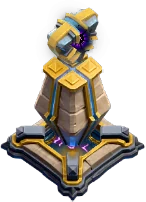
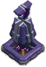
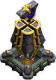
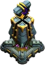

Monolith — Clash of Clans
Updated: 26 August 2026 · By the Goblins Farm team
The Monolith unlocks at Town Hall 15, covers air and ground at 11 tiles, and deals damage scaled against the target's hitpoints. That makes it the specific answer to the heavy units that heavy armies are built around.
- Levels
- 5
- Size
- 3x3
- Category
- Defense
- Damage per second
- 150
- Targets
- Ground and air
- Range
- 11 tiles
- Unlocked at
- Town Hall 15
- Most you can place
- 1
- Role
- Defence, air and ground
What the numbers say
150 damage per second listed, 11 tiles, air and ground, 4 levels. The listed figure understates it against exactly the targets it is designed for, because its damage scales with how much health the target has.
The consequence is a clean inversion of the usual rule. Splash defences punish many weak units; single-target defences punish few strong ones; the Monolith punishes durable ones specifically. Golems, P.E.K.K.As, Electro Titans and heroes are all worse against it than their hitpoints suggest.
Attacking into one
Do not lead with your tank and hope. The standard answers are the standard answers: destroy it before the heavy units arrive, freeze it during the window your tank has to survive, or attack from a direction its 11 tiles do not cover. Bringing more hitpoints into its range is the one response that makes things worse.
 How it looks at each level
How it looks at each level



Stats by level
| Level | Hitpoints | DPS or effect | Build cost | Build time | Town Hall |
|---|---|---|---|---|---|
| 1 | 4,747 | 150 DPS | 200,000 Dark Elixir | 7 d | 15 |
| 2 | 5,050 | 175 DPS | 250,000 Dark Elixir | 8 d | 15 |
| 3 | 5,353 | 193 DPS | 260,000 Dark Elixir | 9 d | 16 |
| 4 | 5,656 | 209 DPS | 300,000 Dark Elixir | 11 d | 17 |
| 5 | 5,959 | 225 DPS | 470,000 Dark Elixir | 15 d | 18 |
| Town Hall | Available |
|---|---|
| TH15 | 1 |
| TH16 | 1 |
| TH17 | 1 |
| TH18 | 1 |

Where these numbers come from. Read from Clash of Clans' own game files, client build 18.400.21. They are exact for that build and do not reflect anything released after it, so verify in game before committing an upgrade.
Game values are read from Supercell's own game files, reproduced as fan content under Supercell's Fan Content Policy. Goblins Farm is not affiliated with, endorsed, sponsored, or specifically approved by Supercell, and Supercell is not responsible for it.
 Frequently asked
Frequently asked
What does the Monolith counter?
High-hitpoint troops, because its damage scales with the target's health. Golems, P.E.K.K.As and heroes take disproportionately more from it than its listed damage per second suggests.
How do I counter the Monolith when attacking?
Destroy it before your heavy units enter its range, freeze it during the critical window, or route the attack outside its 11 tile coverage. Sending more hitpoints at it is precisely the wrong response.
 Keep reading
Keep readingGoblins Farm is not affiliated with, endorsed by, sponsored by, or specifically approved by Supercell. Clash of Clans is a trademark of Supercell Oy. This material is unofficial fan content produced under Supercell's Fan Content Policy. Game values change with every update; always verify in-game before committing an upgrade.